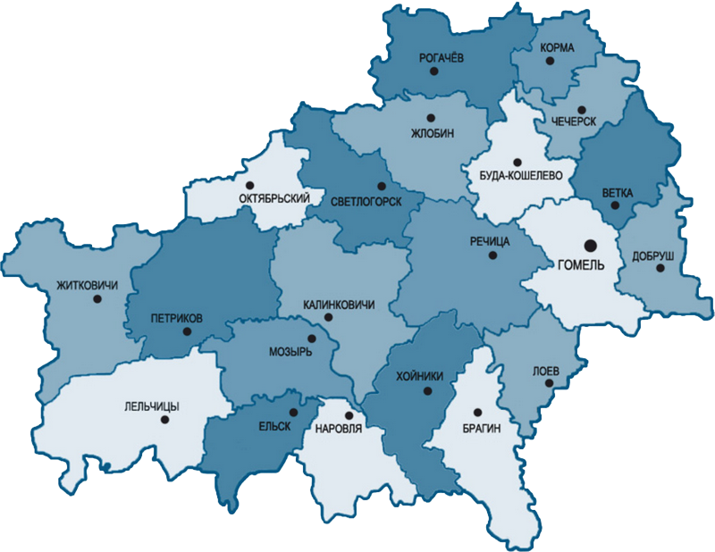

Гомельская область – одна из шести областей Беларуси. Расположена в юго-восточной части страны.
Гомельская область – крупнейшая по территории область Беларуси (40,4 тыс.кв. км). Область граничит с
Брянской областью России, а также с Киевской, Черниговской, Житомирской и Ровненской областями Украины.
Сельскохозяйственные угодья занимают 30% территории региона.
Поселки и города Гомельской области
Гомель – областной административный центр. Территория области разделена на 21 район. В состав области входят 18 городов, 15 поселков городского типа, 2255 сельских населенных пунктов.
Промышленность Гомельской области
Гомельская область является одним из высокоразвитых индустриальных регионов Беларуси. На его территории расположено около 300 крупных и средних предприятий, доля которых в объеме промышленного производства республики составляет 24,1%. Около 70% производимой продукции идет на экспорт. Внешнеторговые операции осуществляются более чем со 100 странами. Объем выпускаемой продукции Гомельской области в расчете на 1 жителя больше, чем в Минске.
Ведущими отраслями промышленности являются:топливная химическая лесная легкая пищевая производство стали и металлопроката машиностроение (особенно развито сельскохозяйственное машиностроение)
Основной промышленный потенциал сосредоточен в городах Гомель, Мозырь, Жлобин, Светлогорск, Речица, Добруш.
Создана свободная экономическая зона «Гомель-Ратон»
Сельское хозяйство в Гомельской области
Агропромышленный комплекс области способен удовлетворить потребности населения в основных продуктах питания и обеспечить сырьем перерабатывающую отрасль. Основные сельскохозяйственные отрасли: мясо-молочное животноводство, овощеводство и картофелеводство, а также льноводство (в восточной части области). Сельскохозяйственные угодья составляют 1,2 млн. га.
Около 50% произведенного в области продовольствия экспортируется в различные страны мира.